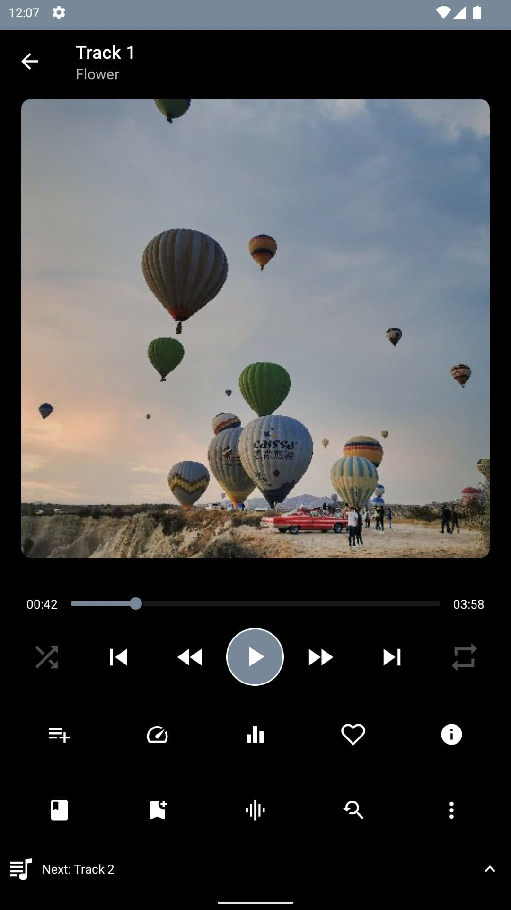
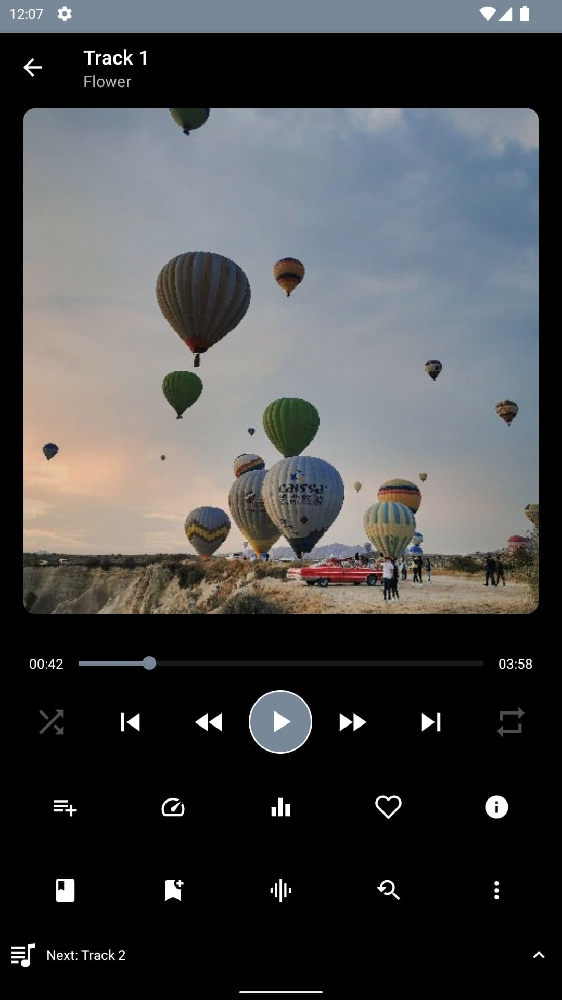

Music Playback
Local and Cloud music playback.
Music Playback
Local and Cloud music playback.
Equalizer
In-built Equalizer with Bass and volume boost
Dark & Light Theme
Tons of theme options, including light & dark mode.
Spiral Player is a cloud & offline music player with tons of customization options and themes. Use it as an offline music player or link your Dropbox, Box, OneDrive and Google Drive to stream music directly from it. Spiral Player works both offline and online.
• Local and cloud music playback
• Tons of theme options, including light & dark mode
• Play high quality lossless FLAC format
• Support all the most popular music file formats.
• Support for embedded lyrics
• Exclude song and folders from cloud
• Backup and Restore
• In-built equalizer with volume boost
• Support for system equalizer
• Repeat all, repeat one and shuffle
• Adjust Playback speed (Pro feature)
• Skip silences in the audio
• Tons of sort options
• Line and bar visualizer
• Sleep timer, Quick search, Easy navigation
• Customizable span count for grid mode
• Customizable sections
• Customizable notification
• Enable/disable artwork
• Create playlist from songs, folders.